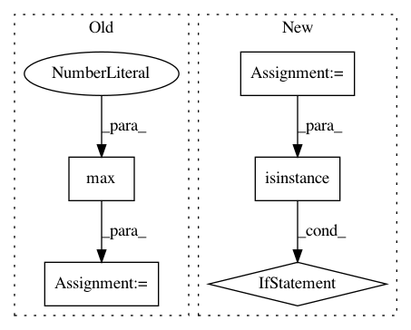

422678c8bf45574bb7c8a87ba434c455f9f7b877,magenta/music/chord_inference.py,,sequence_note_pitch_vectors,#Any#Any#,148
Before Change
pitch_class = note.pitch % 12
start_frame = min(start_frame, num_frames - 1)
end_frame = max(end_frame, 0)
if start_frame >= end_frame:
x[start_frame, pitch_class] += note.end_time - note.start_time
else:
After Change
A numpy array with shape `[num_frames, 12]` where each row is a unit-
normalized pitch class vector for the corresponding frame in `sequence`.
if isinstance(seconds_per_frame, numbers.Number):
// Construct array of frame boundary times.
num_frames = int(math.ceil(sequence.total_time / seconds_per_frame))
frame_boundaries = seconds_per_frame * np.arange(1, num_frames)
else:
frame_boundaries = sorted(seconds_per_frame)
num_frames = len(frame_boundaries) + 1
x = np.zeros([num_frames, 12])
for note in sequence.notes:
if note.is_drum:
In pattern: SUPERPATTERN
Frequency: 3
Non-data size: 5
Instances
Project Name: tensorflow/magenta
Commit Name: 422678c8bf45574bb7c8a87ba434c455f9f7b877
Time: 2018-07-26
Author: iansimon@users.noreply.github.com
File Name: magenta/music/chord_inference.py
Class Name:
Method Name: sequence_note_pitch_vectors
Project Name: jsalt18-sentence-repl/jiant
Commit Name: a58bb4244b3b5ffbf7ffb1994926fcbe8cfa0c1d
Time: 2018-07-05
Author: wang.alex.c@gmail.com
File Name: src/evaluate.py
Class Name:
Method Name: evaluate
Project Name: matplotlib/matplotlib
Commit Name: 34b8eb46e5de6b760bc131e461755042716e259d
Time: 2018-02-07
Author: story645@gmail.com
File Name: lib/matplotlib/category.py
Class Name: UnitData
Method Name: update